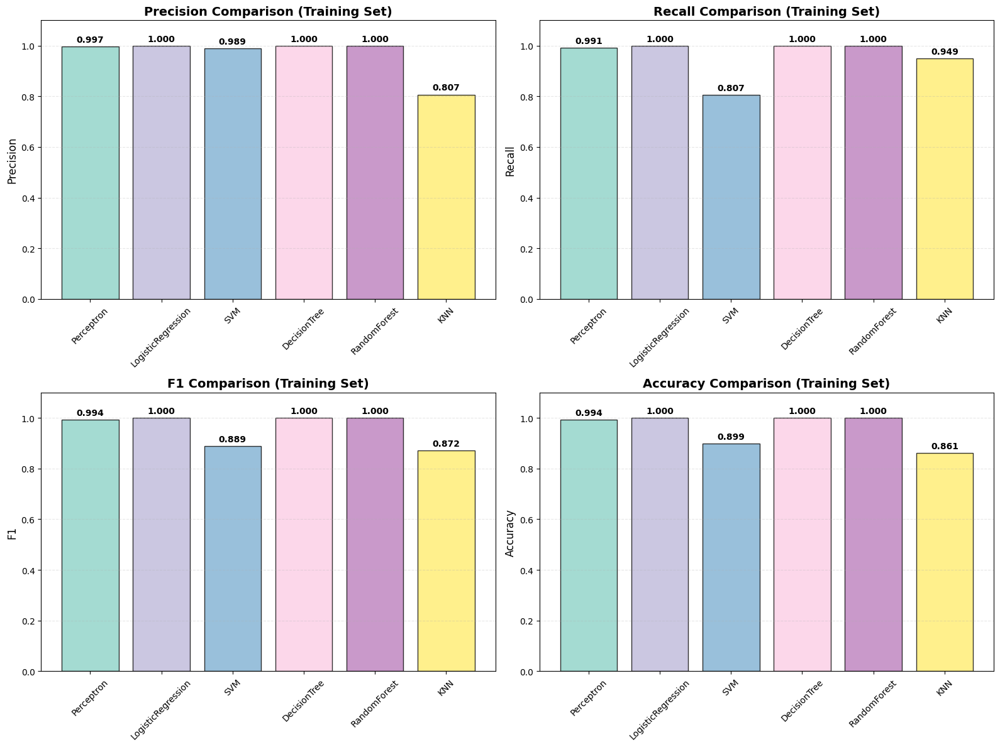
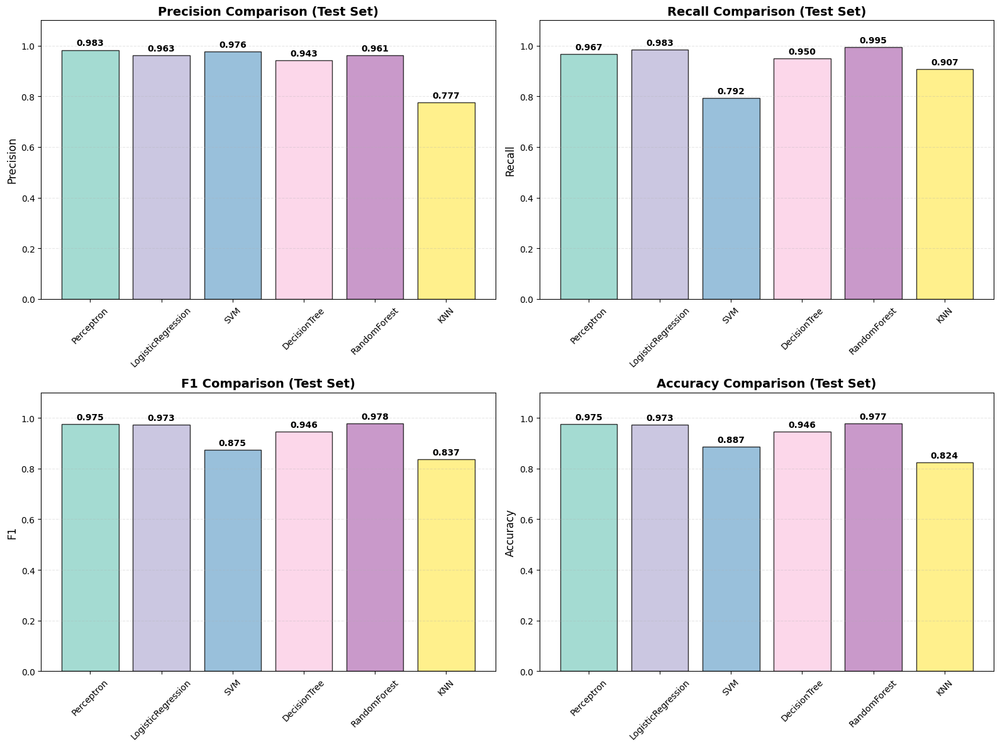
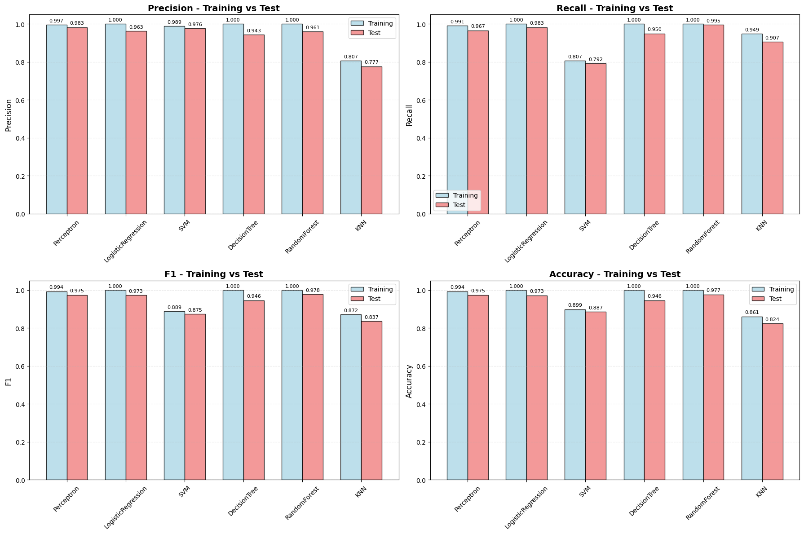
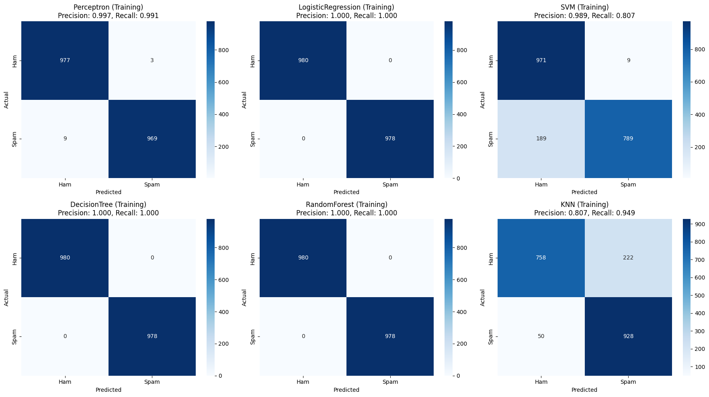
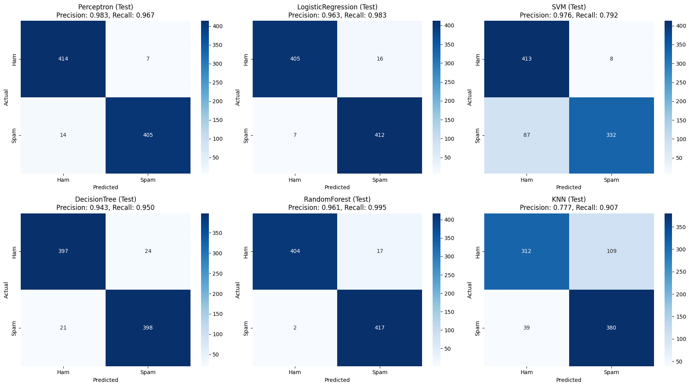

Tiny toy project: Junk mail classification system
Published:
This is a toy project of a junk mail classification system. Scikit-learn is used to implement the machine learning models, and NLTK is used to tokenize the text extracting discrete features.
Purpose
Build a spam classifier:
- Download examples of spam and ham from
Apache SpamAssassin’s public datasets. - Unzip the datasets and familiarize yourself with the data format.
- Split the datasets into a training set and a test set.
- Write a data preparation pipeline to convert each email into a feature vector. Your preparation pipeline should transform an email into a (sparse) vector that indicates the presence or absence of each possible word. For example, if all emails only ever contain four words, “Hello,” “how,” “are,” “you,” then the email “Hello you Hello Hello you” would be converted into a vector [1, 0, 0, 1] (meaning [“Hello” is present, “how” is absent, “are” is absent, “you” is present]), or [3, 0, 0, 2] if you prefer to count the number of occurrences of each word.
- You may want to add hyperparameters to your preparation pipeline to control whether or not to strip off email headers, convert each email to lowercase, remove punctuation, replace all URLs with “URL,” replace all numbers with “NUMBER,” or even perform stemming (i.e., trim off word endings; there are Python libraries available to do this).
- Finally, try out several classifiers and see if you can build a great spam classifier, with both high recall and high precision.
Data Preprocessor
Class DataPreprocessor is a data preparation pipeline to convert each email into a feature vector.
The dataset is downloaded to local machine and is read by file path.
An email is composed by several parts. The preprocessor can decide which parts to keep by passing parameters.
The remaining parts will be processed by a series of text processing, such as lowercase, replacing URLs, and so on. The output is an email string.
Here I use a natural language toolkit to encode the whole email string into a sparse feature vector. I count the number of occurrences of each word in the email by default.
Then we have the feature vectors now.
# data preparation pipeline
import os
import urllib.request
import tarfile
import re
from email import policy
from email.parser import BytesParser
import string
from html import unescape
from sklearn.feature_extraction.text import CountVectorizer
from sklearn.model_selection import train_test_split
import nltk
from nltk.stem import PorterStemmer
from nltk.tokenize import word_tokenize
# NLTK is a leading platform for building Python programs to work with human language data.
try:
nltk.data.find('tokenizers/punkt')
except LookupError:
nltk.download('punkt')
nltk.download('punkt_tab')
class DataPreprocessor:
def __init__(self,
strip_headers=True,
lowercase=True,
remove_punctuation=True,
replace_urls=True,
replace_numbers=True,
use_stemming=True,
binary_features=False,
max_features=999999):
self.strip_headers = strip_headers
self.lowercase = lowercase
self.remove_punctuation = remove_punctuation
self.replace_urls = replace_urls
self.replace_numbers = replace_numbers
self.use_stemming = use_stemming
self.binary_features = binary_features
self.max_features = max_features
self.stemmer = PorterStemmer() if use_stemming else None
self.vectorizer = CountVectorizer(
lowercase=self.lowercase,
max_features=self.max_features,
binary=self.binary_features,
stop_words='english',
# token_pattern=r'\b[a-zA-Z]{2,}\b'
)
def load_emails_from_directory(self, dir):
emails = []
for f in os.listdir(dir):
filepath = os.path.join(dir, f)
if os.path.isfile(filepath):
try:
with open(filepath, 'r', encoding='utf-8', errors='ignore') as f:
content = f.read()
emails.append(content)
except Exception as e:
print(f"Error reading {filepath}: {e}")
return emails
def load_emails_from_internet(self):
spam_url = "https://spamassassin.apache.org/old/publiccorpus/20050311_spam_2.tar.bz2"
spam_filename = "20050311_spam_2.tar.bz2"
ham_url = "https://spamassassin.apache.org/old/publiccorpus/20030228_easy_ham_2.tar.bz2"
ham_filename = "20030228_easy_ham_2.tar.bz2"
urllib.request.urlretrieve(spam_url, spam_filename)
with tarfile.open(spam_filename, "r:bz2") as tar:
tar.extractall()
urllib.request.urlretrieve(ham_url, ham_filename)
with tarfile.open(ham_filename, "r:bz2") as tar:
tar.extractall()
def load_emails(self, ham_dir=None, spam_dir=None):
if ham_dir is None or spam_dir is None:
self.load_emails_from_internet()
ham_dir = ".\\easy_ham_2"
spam_dir = ".\\spam_2"
ham_emails = self.load_emails_from_directory(ham_dir)
spam_emails = self.load_emails_from_directory(spam_dir)
# labeling
ham_labels = [0] * len(ham_emails) # 0 for ham
spam_labels = [1] * len(spam_emails) # 1 for spam
all_emails = ham_emails + spam_emails
all_labels = ham_labels + spam_labels
return all_emails, all_labels
def extract_email_body(self, email_content):
try:
msg = BytesParser(policy=policy.default).parsebytes(email_content.encode('utf-8'))
if self.strip_headers:
body = ""
if msg.is_multipart():
for part in msg.walk():
content_type = part.get_content_type()
content_disposition = str(part.get("Content-Disposition"))
if "attachment" in content_disposition:
continue
if content_type == "text/plain":
body += part.get_content()
elif content_type == "text/html":
html_content = part.get_content()
html_content = re.sub(r'<[^>]+>', ' ', html_content)
html_content = unescape(html_content)
body += html_content
else:
content_type = msg.get_content_type()
if content_type == "text/plain":
body = msg.get_content()
elif content_type == "text/html":
html_content = msg.get_content()
html_content = re.sub(r'<[^>]+>', ' ', html_content)
html_content = unescape(html_content)
body = html_content
return body.strip()
else:
return msg.as_string()
except Exception as e:
print(f"Error parsing email: {e}")
return email_content
def preprocess_text(self, text):
if not text:
return ""
if self.lowercase:
text = text.lower()
if self.replace_urls:
text = re.sub(r'http[s]?://(?:[a-zA-Z]|[0-9]|[$-_@.&+]|[!*\\(\\),]|(?:%[0-9a-fA-F][0-9a-fA-F]))+', ' URL ', text)
text = re.sub(r'www\.[a-zA-Z0-9.-]+\.[a-zA-Z]{2,}', ' URL ', text)
if self.replace_numbers:
text = re.sub(r'\b\d+\b', ' NUMBER ', text)
text = re.sub(r'\$\d+', ' MONEY ', text)
if self.remove_punctuation:
text = text.translate(str.maketrans('', '', string.punctuation))
if self.use_stemming and self.stemmer:
words = word_tokenize(text)
stemmed_words = [self.stemmer.stem(word) for word in words]
text = ' '.join(stemmed_words)
text = re.sub(r'\s+', ' ', text).strip()
return text
def process_single_email(self, email_content):
body = self.extract_email_body(email_content)
processed_text = self.preprocess_text(body)
return processed_text
def fit(self, email_contents):
processed_texts = [self.process_single_email(content) for content in email_contents]
self.vectorizer.fit(processed_texts)
return self
def transform(self, email_contents):
if self.vectorizer is None:
return None
processed_texts = [self.process_single_email(content) for content in email_contents]
X = self.vectorizer.transform(processed_texts)
return X
def fit_transform(self, email_contents):
return self.fit(email_contents).transform(email_contents)
Here I modified the way of dataset acquisition. Now it can be downloaded from the link.
The only thing to do is to run the code!
(Just ignore the error message, because some emails are encoded unusually and hard to extract the text. But the original email is saved as a part of the training set.)
preprocessor = DataPreprocessor()
X, y = preprocessor.load_emails()
X_train_raw, X_test_raw, y_train, y_test = train_test_split(X, y, test_size=0.3,
random_state=114514, stratify=y)
X_train = preprocessor.fit_transform(X_train_raw)
X_test = preprocessor.transform(X_test_raw)
print(X_train.shape)
print(X_test.shape)
Training
This is a class for training 6 classifiers.
import numpy as np
from sklearn.preprocessing import StandardScaler, MaxAbsScaler
from sklearn.linear_model import Perceptron, LogisticRegression
from sklearn.svm import SVC
from sklearn.tree import DecisionTreeClassifier
from sklearn.ensemble import RandomForestClassifier
from sklearn.neighbors import KNeighborsClassifier
from sklearn.metrics import precision_score, recall_score, f1_score, accuracy_score, confusion_matrix
import matplotlib.pyplot as plt
import seaborn as sns
from scipy.sparse import issparse
class Classifiers:
def __init__(self):
self.models = self.initialize_models()
self.scaler = None
self.train_results = {}
self.test_results = {}
def initialize_models(self):
return {
'Perceptron': Perceptron(random_state=3036657914, max_iter=1000, tol=1e-3, eta0=1.0,
early_stopping=True, validation_fraction=0.1, n_iter_no_change=5),
'LogisticRegression': LogisticRegression(random_state=3036657914, max_iter=1000, C=100.0),
'SVM': SVC(random_state=3036657914, C=1, probability=True),
'DecisionTree': DecisionTreeClassifier(criterion='gini', random_state=3036657914),
'RandomForest': RandomForestClassifier(criterion='gini', n_estimators=100,
random_state=3036657914, n_jobs=2),
'KNN': KNeighborsClassifier(n_neighbors=5, p=2, metric='minkowski')
}
def scale_features(self, X_train, X_test, scaling_method='standard'):
if scaling_method == 'standard':
if issparse(X_train):
self.scaler = MaxAbsScaler()
else:
self.scaler = StandardScaler()
elif scaling_method == 'maxabs':
self.scaler = MaxAbsScaler()
else:
self.scaler = None
return X_train, X_test
X_train_scaled = self.scaler.fit_transform(X_train)
X_test_scaled = self.scaler.transform(X_test)
return X_train_scaled, X_test_scaled
def evaluate(self, model, X, y):
# predict
y_pred = model.predict(X)
# probability
y_pred_proba = model.predict_proba(X)[:, 1] if hasattr(model, 'predict_proba') else None
# metrics
precision = precision_score(y, y_pred)
recall = recall_score(y, y_pred)
f1 = f1_score(y, y_pred)
accuracy = accuracy_score(y, y_pred)
# result
result = {
'model': model,
'precision': precision,
'recall': recall,
'f1': f1,
'accuracy': accuracy,
'predictions': y_pred,
'probabilities': y_pred_proba
}
print(result)
return result
def evaluate_all(self, X_train, y_train, X_test, y_test):
for name, model in self.models.items():
print(f"\nEvaluating {name}...")
try:
# predict and evaluate on training set
print('train_result:\n')
train_result = self.evaluate(model, X_train, y_train)
self.train_results[name] = train_result
# predict and evaluate on testing set
print('test_result:\n')
test_result = self.evaluate(model, X_test, y_test)
self.test_results[name] = test_result
except Exception as e:
print(f"Error evaluating {name}: {e}")
continue
def train(self, X_train, y_train):
for name, model in self.models.items():
print(f"\nTraining {name}...")
try:
model.fit(X_train, y_train)
except Exception as e:
print(f"Error training {name}: {e}")
continue
def plot_results(self, type='test'):
if type == 'train':
results = self.train_results
title_suffix = " (Training Set)"
else:
results = self.test_results
title_suffix = " (Test Set)"
if not results:
print(f"No {type} results to plot. Please train and evaluate models first.")
return
metrics = ['precision', 'recall', 'f1', 'accuracy']
models = list(results.keys())
fig, axes = plt.subplots(2, 2, figsize=(16, 12))
axes = axes.ravel()
colors = plt.cm.Set3(np.linspace(0, 1, len(models)))
for i, metric in enumerate(metrics):
values = [results[model][metric] for model in models]
bars = axes[i].bar(models, values, color=colors, alpha=0.8, edgecolor='black')
axes[i].set_title(f'{metric.capitalize()} Comparison{title_suffix}', fontsize=14, fontweight='bold')
axes[i].set_ylabel(metric.capitalize(), fontsize=12)
axes[i].set_ylim(0, 1.1)
axes[i].tick_params(axis='x', rotation=45, labelsize=10)
axes[i].grid(axis='y', alpha=0.3, linestyle='--')
for bar, value in zip(bars, values):
height = bar.get_height()
axes[i].text(bar.get_x() + bar.get_width()/2., height + 0.01,
f'{value:.3f}', ha='center', va='bottom', fontweight='bold')
plt.tight_layout()
plt.show()
def plot_comparison(self):
if not self.train_results:
print("Train results missing.")
return
if not self.test_results:
print("Test results missing.")
return
metrics = ['precision', 'recall', 'f1', 'accuracy']
models = list(self.train_results.keys())
x = np.arange(len(models))
width = 0.35
fig, axes = plt.subplots(2, 2, figsize=(18, 12))
axes = axes.ravel()
for i, metric in enumerate(metrics):
train_values = [self.train_results[model][metric] for model in models]
test_values = [self.test_results[model][metric] for model in models]
bars1 = axes[i].bar(x - width/2, train_values, width, label='Training',
color='lightblue', alpha=0.8, edgecolor='black')
bars2 = axes[i].bar(x + width/2, test_values, width, label='Test',
color='lightcoral', alpha=0.8, edgecolor='black')
axes[i].set_title(f'{metric.capitalize()} - Training vs Test', fontsize=14, fontweight='bold')
axes[i].set_ylabel(metric.capitalize(), fontsize=12)
axes[i].set_xticks(x)
axes[i].set_xticklabels(models, rotation=45)
axes[i].legend()
axes[i].grid(axis='y', alpha=0.3, linestyle='--')
for bars in [bars1, bars2]:
for bar in bars:
height = bar.get_height()
axes[i].text(bar.get_x() + bar.get_width()/2., height + 0.01,
f'{height:.3f}', ha='center', va='bottom', fontsize=8)
plt.tight_layout()
plt.show()
def plot_confusion_matrices(self, y, type='test'):
if type == 'train':
results = self.train_results
title_suffix = " (Training)"
else:
results = self.test_results
title_suffix = " (Test)"
if not results:
print(f"No {type} results to plot. Please evaluate models first.")
return
n_models = len(results)
n_cols = 3
n_rows = (n_models + n_cols - 1) // n_cols
fig, axes = plt.subplots(n_rows, n_cols, figsize=(6*n_cols, 5*n_rows))
if n_rows == 1 and n_cols == 1:
axes = np.array([axes])
elif n_rows == 1:
axes = axes.ravel()
else:
axes = axes.ravel()
for i, (name, result) in enumerate(results.items()):
if i >= len(axes):
break
y_pred = result['predictions']
cm = confusion_matrix(y, y_pred)
sns.heatmap(cm, annot=True, fmt='d', cmap='Blues', ax=axes[i],
xticklabels=['Ham', 'Spam'], yticklabels=['Ham', 'Spam'])
axes[i].set_title(f'{name}{title_suffix}\nPrecision: {result["precision"]:.3f}, Recall: {result["recall"]:.3f}')
axes[i].set_xlabel('Predicted')
axes[i].set_ylabel('Actual')
for i in range(len(results), len(axes)):
axes[i].set_visible(False)
plt.tight_layout()
plt.show()
Here I instantiate the Classifiers class.
First, training and testing set features are scaled.
Then, 6 models are trained and evaluated.
classifiers = Classifiers()
X_train_std, X_test_std = classifiers.scale_features(X_train, X_test, 'standard')
classifiers.train(X_train, y_train)
classifiers.evaluate_all(X_train, y_train, X_test, y_test)
Result
Here is some plot graphs.
I draw bar chart for results and comparison.
I also draw confusion matrices.
classifiers.plot_results('train')
classifiers.plot_results('test')
classifiers.plot_comparison()
classifiers.plot_confusion_matrices(y_train, 'train')
classifiers.plot_confusion_matrices(y_test, 'test')




